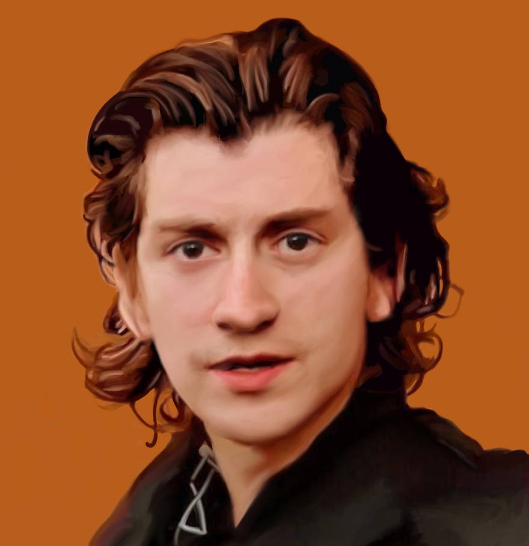
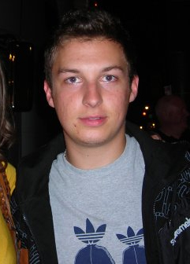
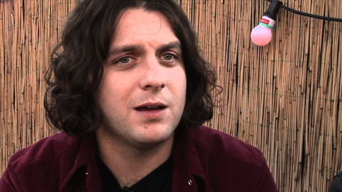

Alex David Turner
Born: January 6, 1986
Alex Turner is the frontman and lead singer-songwriter of the rock band Arctic Monkeys. Known for his lyricism ranging from kitchen sink realism to surrealist wordplay.

Matthew Helders
Born: May 7, 1986
Matthew Helders is the drummer, vocalist, and songwriter for Arctic Monkeys. He is a founding member of the band and has recorded seven studio albums with them.

Jamie Robert Cook
Born: July 8, 1985
Jamie Cook is the rhythm and lead guitarist of Arctic Monkeys, as well as a founding member. He has recorded six studio albums with the band.

Nicholas O'Malley
Born: July 5, 1985
Nicholas O'Malley is the bass guitarist and backing vocalist of Arctic Monkeys. He joined the band as a replacement for their previous bassist, Andy Nicholson.